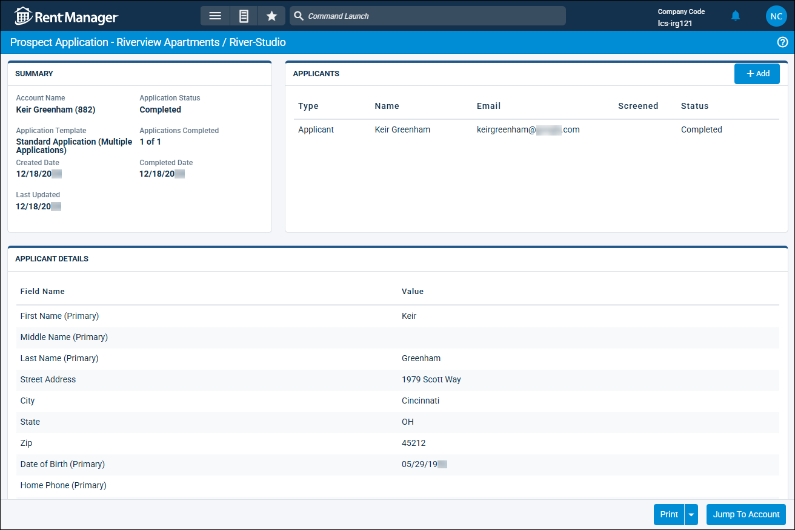

Source: https://rmxhelp.rentmanager.com/Topics/Express/Action/Applications-Subapplicant-Add.htm
Add a Subapplicant to a Submitted Application
If a prospective tenant submits their application without sending a necessary subapplication, you can add the additional applicant(s). For example, a prospect may have forgotten to send an application to a coapplicant, need to inform you that they found a roommate after submitting their application, or are required to add a guarantor based on their income.
More Information
This process can be completed only for submitted applications that used an application template with at least one associated subapplication. For more information, refer to Add a Primary Application Template and Add a Sub-Application Template.
Related Privileges
| Group | Privilege | Column |
|---|---|---|
| Tenants/Prospects | Application | View, Edit |
For more information, refer to Control User Access.
To send a subapplication from a completed application, do the following:
-
Go to
 arrow_forward Rental Info arrow_forward Leasing arrow_forward Applications.
arrow_forward Rental Info arrow_forward Leasing arrow_forward Applications.
The Applications page displays. -
Select a completed application from the list.

-
In the Applicants tile, click
 Add.
Add.
The Add Applicant pop-up displays. -
In the Applicant Type field, select the kind of applicant to be created when their subapplication is submitted (e.g., Co-Applicant).
More Information
This drop-down list populates with the applicant types that are set up in the application template's Additional Applicant section. If you assigned a Friendly Name to the applicant type, that name displays instead of the actual Applicant Type name.
For example, you may have a subapplication set up to create an Occupant-type applicant with the Friendly Name entered as Roommate. In this case, Roommate displays in the drop-down list, but any contacts created from this template have the Applicant Type of Occupant. For more information, refer to Add a Primary Application Template.
-
Enter the additional applicant's Full Name and Email address.
-
Click Save.
A link is emailed to the contact to complete their subapplication, and the primary application is reopened.